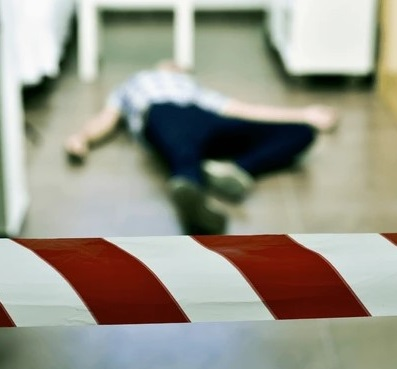
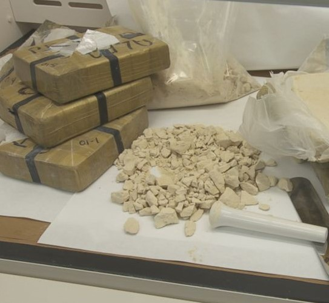
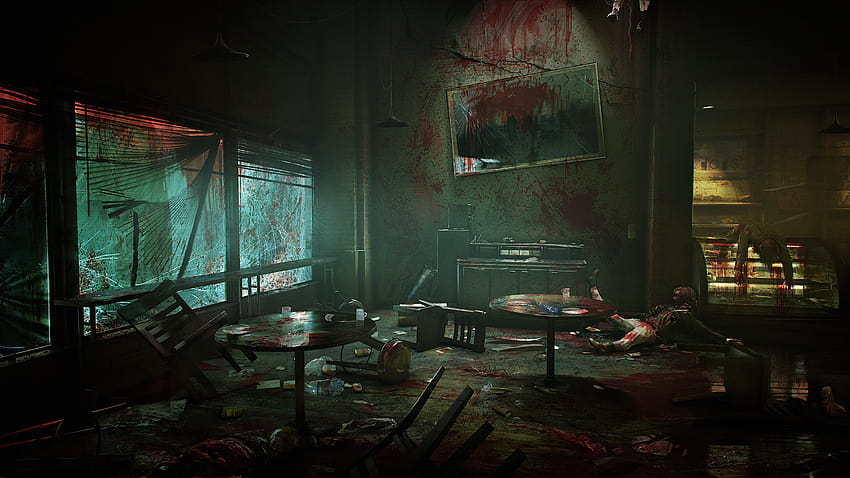

Furto con Omicidio
Irruzione con assassinio

L'ultimo giorno del 1989 comincia nel sangue. Un uomo è stato ucciso in casa sua,
probabilmente dopo aver sorpreso un ladro che si era introdotto con
un inganno ben orchestrato, poco prima dell'una di notte. L'assalitore ha usato quello
che gli inquirenti hanno identificato come un possibile bisturi o un taglierino ben affilato
per recidere la vena giugulare di Emil Novàk, 53 anni, imprenditore nel campo manifatturiero.
La moglie è ancora ricoverata in gravi condizioni al Frantishku Memorial e la sua prognosi è
riservata. Una testimone oculare, la figlia dei vicini, minorenne ed incensurata, è stata
trovata dagli investigatori in stato di shock. Alla polizia che l'ha interrogata ha riferito,
in stato confusionario, di aver "visto un fantasma".
guerra fra bande: massacro al centro di spaccio di sjkeniak 25
A distanza di appena un'ora dall'omicidio avvenuto durante la prima ora del 31 dicembre
(vedasi articolo precedente, ndr) altri omicidi vengono consumati nel quartiere popolare
di Sjeniak, già ben noto alle forze dell'ordine come zona periferica di difficile gestione
dove, causa omertà e collaborazione da parte delle fasce più deboli della popolazione praghese,
è sede uno dei più grandi centri di spaccio d'eroina della città.
La polizia ha dichiarato che un centro di spaccio al civico 25 dell'omonima strada, è stato
smantellato a colpi di arma da fuoco e fendenti mortali.
Il bilancio è di tre morti, tutti
residenti del posto ma dei quali non sono state fornite le generalità. Nonostante l'evento
porterà sicuramente ad una battuta d'arresto al traffico della droga, la polizia non è stata
al momento in grado di risalire agli artecifi del massacro. E' stato rivelato che nessuna quantità
d'eroina è stata sottratta mentre non è stata rilevata traccia di denaro contante nell'appartamento.
Le indagini continuano anche se le forze dell'ordine non sperano in una rapida svolta nelle indagini.

the union distrutto: l'inspiegabile furia dell'ultimo dell'anno
Le strade di Praga continuano a bagnarsi di sangue: il famoso locale The Union, terzo in ordine di
importanza dopo il Nocturnal di Nadezda Javoklevna e il Noc u Tynske di Tynske Masarik, è stato messo
a ferro e a fuoco da quella che la polizia ha definito come "una sconosciuta banda di criminali stranieri",
probabilmente la stessa che ha smantellato il centro di spaccio d'eroina di Sjeniak (vedasi articolo precedente,
ndr). Il bilancio è di sette morti fra cui Clara Càpek, 26 anni, nome noto di un atelier di una nota firma
stilistica praghese. Alcune indiscrezioni accennano allo stato raccapricciante in cui sono stati
ritrovati alcuni corpi; il medico legale non ha ancora rilasciato alcun comunicato ufficiale al riguargo.
